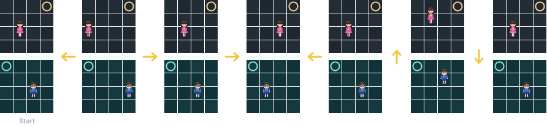
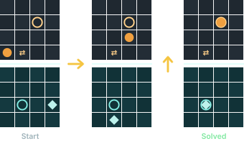

The goal
There are two boards: the stone board on top and the water board below. Swipe anywhere to move both pieces at once.
Get the amber circle onto its ring on the top board and the teal diamond onto its ring below, on the same move.

Each picture shows the start of a small level and the boards after every swipe. The yellow arrow is the swipe.
There are two boards: the stone board on top and the water board below. Swipe anywhere to move both pieces at once.
Get the amber circle onto its ring on the top board and the teal diamond onto its ring below, on the same move.
Up and down move both pieces the same way. Left and right are mirrored: when the circle goes left, the diamond goes right.

A wall stops only the piece that hits it. The other piece still moves, so walls are how you change the distance between the two.

A piece that steps into a pit sinks and the level starts again. Undo takes you back to just before the fall.

A piece on ice keeps sliding until something stops it or it reaches normal floor.

Stepping onto a switch opens or closes the door with the same letter, even on the other board. A closed door blocks like a wall; the change counts from the next move.

When a piece lands on a swap tile, the two pieces trade places, each staying on its own board.

Take back a move. You can undo as far as you like.
Start the level again. A restart can be undone too.
Watch a short ad to see the best next move. Each hint is one ad. If no ad is available, the hint is free.
Three stars for solving in the fewest possible moves (par), two for a few more, one for any solve.
After you solve 12 levels of the first chapter, a new puzzle waits for you every day at midnight, your local time. Solve one each day to build a streak.
Missed a day or two? When you come back you can keep your streak for 5 stars. After three missed days, the streak starts again.
Daily puzzles use walls, pits and ice only, so they never need a tile you have not learned yet.